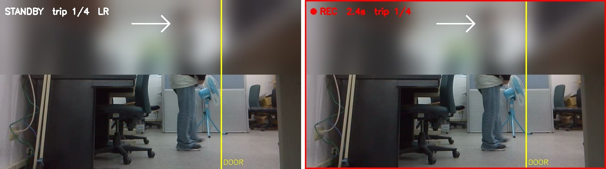

日期：2026 年 11 月 15 日
指導教授：朱學亭老師
目前階段：階段 4：公式消融；階段 2：多人資料集準備
進度摘要
11/14 發現現有比對方式（26 維特徵＋cosine）不敏感：大腿擺動角整個正負翻轉，相似度只降 0.006，陌生人可能被誤認為授權者，導致尾隨漏判。
本次導入公式 2「z-score 標準化＋歐氏距離」（並追加公式 1-3「鏡像後左右腳對調」，方向干擾再降約 30%）：先把每一維特徵換成「比平均多幾個標準差」，讓各特徵份量相同，再以兩點的直線距離比對。程式完成並以 S0 資料跑完四組消融設定，改前基準與公式 1 的數字與先前完全一致（沒有改壞）。
由於目前只有 1 位受試者，公式 2 能否降低誤認率（FAR、EER）須以 11/16 多人資料證明。
另外改良錄影程式：新增行走方向選項（尾隨情境每趟都朝門的方向）與錄影時的預覽視窗，並完成 11/16 錄影規劃。
一、今日完成項目
| PR | 內容 | 狀態 |
|---|
| #13 | 公式 2：gait_formulas.py 新增 z-score 與歐氏距離；evaluate.py 可切換公式與比對方式 | 待組員審查合併 |
| #15 | 公式 1-3：方向統一鏡像後左右腳對調（--formulas dir,swap） | 待 #13 合併後審查 |
| #14 | recorder.py：--direction 行走方向選項＋錄影預覽視窗 | 11/16 於 Jetson 實測後合併 |
二、公式 2 原理
2.1 問題：原始特徵的尺度差很多，而且幾乎都是正值
| 特徵（舉例） | 一般數值 | 影響 |
|---|
| 膝角平均 | 較大 | 向量方向幾乎由大數值特徵決定；擺動角差一倍，對 cosine 幾乎沒影響。且特徵都為正值，每個人的向量擠在同一個方向，cosine 一律接近 0.99 |
| 大腿占腿長比例 | 約 0.5 |
| 大腿擺動角平均 | 約 0.03 |
2.2 公式 2-1：z-score 標準化
zi = ( fi − μi ) ÷ σi
μi、σi 為第 i 維特徵在登錄資料中的平均與標準差。z 代表「這個人在這一項比一般人多（或少）幾個標準差」。換算後每一維平均 0、標準差 1：份量相同，而且有正有負。好比數學考 80 分（全班平均 60、標準差 10，z = +2）與英文考 80 分（平均 78、標準差 4，z = +0.5），換成 z 才能互相比較。
2.3 公式 2-2：歐氏距離
d(a, b) = √ Σi ( za,i − zb,i )² 距離越小越像
2.4 數值例子（3 維示意）
假設登錄資料 μ = (2.80, 0.50, 0.03)、σ = (0.10, 0.02, 0.01)：
| 樣本 | 原始特徵 | z-score | 改前 cosine | 歐氏距離 |
|---|
| A：授權者登錄 | (2.80, 0.50, 0.04) | (0, 0, +1) | － | － |
| A′：同一人再走一次 | (2.82, 0.50, 0.04) | (0.2, 0, +1) | 0.99999 | 0.20 |
| B：陌生人 | (2.78, 0.52, 0.01) | (−0.2, +1, −2) | 0.99991 | 3.17 |
對照：改前 cosine 同一人與陌生人只差 0.00008，無法分辨；z-score＋歐氏距離為 0.20 對 3.17，相差約 16 倍。
2.5 為什麼 z-score 之後還要改用歐氏距離
z-score 之後，原點代表「走路方式跟平均一樣的人」，方向代表哪些特徵偏大、偏小（走路的類型），離原點多遠代表偏多少（程度）。cosine 公式除以兩個向量的長度，只比方向、不看距離，因此有兩個漏洞：
▲ 圖 1：cosine 只看從原點出發的方向。左：陌生人與授權者同方向但程度不同，cosine 誤認（尾隨者被放行，FAR）；右：走路接近平均的人，小誤差就讓方向翻轉，cosine 誤拒（假警報，FRR）。歐氏距離兩種情況都正確。（示意圖，滑鼠移到點上可看說明）
因此消融實驗分成兩列：「＋z-score（仍用 cosine）」與「＋z-score＋歐氏距離」，分別證明「統一尺度」與「改看距離」各自的貢獻。
三、程式實作
| 模組 | 內容 |
|---|
| fit_zscore() | 由登錄樣本計算每一維 μ、σ；σ 設下限 0.001，避免幾乎不變的維度被除到極大 |
| apply_zscore() | z = (f − μ) ÷ σ |
| euclidean_distance() | d = √Σ(a − b)² |
| main.extract_feature(l2=...) | 新增參數取得 L2 正規化前的原始特徵；預設不變，Jetson 即時系統不受影響 |
| evaluate.py | --formulas dir,zscore、--metric cos|euc；距離「越小越像」，門檻、EER、Rank-1 的判斷方向隨之反轉 |
⚠️ 避免資料洩漏：μ、σ 只用「登錄趟次」計算，再套用到測試趟次。若把測試資料也算進去，等於考前先看考題，準確率會虛高。
四、S0 結果（單人，33 樣本）
| 設定 | 同方向 | 不同方向 | 與登錄模板比對 | FRR@0.80 |
|---|
| ① 改前基準（cosine） | 0.9918 | 0.9860 | 0.9943 | 0% |
| ② ＋方向統一（cosine） | 0.9920 | 0.9896 | 0.9954 | 0% |
| ③ ＋z-score（cosine） | 0.111 | −0.102 | 無定義（見下方說明） | － |
| ④ ＋z-score＋歐氏距離 | 距離 7.02 | 距離 7.78 | 距離 5.51 | 待定門檻 |
- ① ② 沒有改壞：加入公式 2 的程式後，改前基準與公式 1 的數字與 11/14 完全相同。
- ③ 單人時無法評估：只有 1 位受試者時，「一般人的平均」就是他自己的平均，登錄模板經 z-score 後剛好落在原點（長度 0），cosine 對零向量沒有定義，算出的值只是浮點誤差，不能作為結論。多人時平均為全體受試者的平均，模板不在原點，需以 11/16 資料重跑。同一人不同趟之間互相比較（同方向 0.111、不同方向 −0.102）仍然有定義，分數從 −0.73 到 +0.91 都有，顯示走路接近平均時 cosine 方向不穩定（即圖 1 漏洞 2）。
- ④ 距離的單位是「幾個標準差」：目前 σ 只代表同一人每趟之間的差異，沒有陌生人的距離可以比較，FAR、EER 待 11/16。
4.1 不同尺度之間的比較：方向干擾程度
cosine 與距離的單位不同，不能直接比大小。改用「不同方向與同方向的差距 ÷ 分數本身的標準差」比較，不受尺度影響：
| 設定 | 差距 | ÷ 平均標準差 | 方向干擾程度 |
|---|
| ① 改前基準 | 0.0058 | 0.0095 | 0.61 |
| ② ＋方向統一 | 0.0024 | 0.0092 | 0.27 |
| ④ ＋z-score＋歐氏距離 | 0.76 | 2.01 | 0.38 |
④ 的方向干擾比 ② 大。推測原因：z-score 放大了原本數值很小的特徵，其中包含「近鏡頭腳與遠鏡頭腳」的差異 —— 往右走是左腳靠近鏡頭，往左走變成右腳靠近鏡頭，但方向統一只做左右鏡像、沒有對調左右腳，往左走的「左腳特徵」其實來自被遮擋較多的遠鏡頭腳。
4.2 公式 1-3：鏡像後左右腳對調
往左走（RL）：(左髖, 右髖, 左膝, 右膝, 左踝, 右踝) → (右髖, 左髖, 右膝, 左膝, 右踝, 左踝)
讓同一個特徵欄位在兩個方向都來自同一側（近／遠鏡頭）的腳。程式模組：gait_formulas.py 的 swap_legs()，原本的方向統一不變，以新開關 swap 做消融。
| 設定 | 同方向 | 不同方向 | 方向干擾程度 |
|---|
| ② 方向統一（cosine） | 0.9920 | 0.9896 | 0.27 |
| ② ＋左右腳對調（cosine） | 0.9923 | 0.9906 | 0.19（−30%） |
| ④ z-score＋歐氏距離 | 距離 7.02 | 距離 7.78 | 0.38 |
| ④ ＋左右腳對調 | 距離 7.12 | 距離 7.66 | 0.26（−32%） |
結果：兩種比對方式的方向干擾都降低約 30%，z-score 放大方向干擾的問題回到與只做方向統一相當；同一人比對分數不變（0.9954 → 0.9955），FRR 仍為 0%。
⚠️ 尚未完全解釋：往右走時右腿擺動角明顯大於左腿（0.073 對 0.037），往左走對調後兩腿卻相近（0.035 對 0.036），可能還有其他因素（例如 MediaPipe 在側面偶爾把左右腳認反），將以 11/16 多人資料再確認。
五、消融實驗的解讀方式
- 一次只加一個公式，跟上一列比：數字的變化才能歸因於該公式。
- 單人資料只能證明「認得自己」：改前 FRR 0% 看似完美，但 cosine 可能對任何人都給 0.99；要證明「分得出別人」需要 FAR。
- 不同比對方式要用共通指標：cosine（越大越像）與距離（越小越像）的數字不能直接比，消融表以百分比指標為主。
| 指標 | 意義 | 與尾隨偵測的關係 |
|---|
| FAR | 陌生人被誤認為授權者的比例 | 尾隨者混入，最嚴重 |
| FRR | 授權者被拒絕的比例 | 假警報 |
| EER | 調整門檻使 FAR = FRR 時的錯誤率 | 以一個數字代表整體表現，越低越好 |
| Rank-1 | 辨識成正確人員的比例 | 認人準確度 |
六、錄影工具改良（recorder.py）
| 項目 | 說明 |
|---|
| --direction alt|LR|RL | 原本固定單數趟往右、雙數趟往左；尾隨情境需每趟都朝門的方向，改用 LR。預設 alt 與原本相同 |
| 預覽視窗 | 錄影時直接顯示畫面，不必另外執行預覽程式；疊加趟次、方向箭頭、錄影中紅框與秒數、黃色門線 |
| 不顯示骨架 | Nano 跑 MediaPipe 每幀約 150 ms，會拖慢錄影；骨架確認在架設時以 preview.py 做一次即可 |
| 疊加不錄進影片 | 只畫在畫面複本上；已檢查錄下的影片在門線與邊框位置沒有疊加圖案 |

▲ 圖 2：預覽視窗（以 S0 影片在 MacBook 模擬）。左：待命；右：錄影中（紅框＋REC 秒數）；白色箭頭為行走方向，黃線為門線（x = 470）。
⚠️ 待驗證：Jetson 上開著預覽時是否仍維持 30 FPS，於 11/16 架設時實測；若 FPS 下降，可加 --no-preview 關閉預覽，方向選項照常使用。
七、11/16 錄影規劃
7.1 錄影內容（場次 S1，受試者只以代號記錄）
| 項目 | 趟數 | 預期系統結果 | 用途 |
|---|
| 單人（每人，左右交替） | 10 | － | 登錄、FAR／EER、補完消融表 |
| 尾隨：緊跟約 1 秒 | 4 | 判定尾隨 | 核心：能否抓到尾隨 |
| 尾隨：間隔約 5 秒 | 4 | 不算尾隨（超過 T） | 決定時間窗 T、測試假警報 |
| 尾隨：並排 | 2 | 可能合併成一個 ID | 測試已知限制 |
| 單獨通過 | 不另錄 | 授權通過 | 沿用單人錄影中往右走的趟次 |
7.2 注意事項
- 先錄尾隨、再錄單人（尾隨是核心，趁時間充裕先完成）；有時間再角色互換錄一輪。
- 從畫面外起步；通過後直接走出畫面、不回頭；由旁人按 Enter。
- 鏡頭稍後退或降低仰角，以最高的受試者確認頭頂不出畫面；鏡頭移動後重新量測可見範圍並決定新門線。
- 受試者避免寬褲或長裙（膝、踝位置會抓不準）；事先取得同意，資料不公開。
八、已知問題與限制
- 只有 1 位受試者：z-score＋cosine 無法評估，公式 2 的 FAR、EER 改善須以多人資料證明。
- 左右腳對調後仍有殘留的方向干擾（0.19～0.26），原因尚未完全釐清。
- 歐氏距離的門檻尚未決定，將以多人資料的 EER 決定。
- 尾隨流程（run_tailgate.py）仍使用 cosine，待公式 2 驗證後再切換。
九、後續規劃
- 11/16：Jetson 實測錄影預覽；錄製其他受試者與尾隨情境；當天跑出消融表（Rank-1、FAR、FRR、EER）與尾隨判定結果，決定時間窗 T 與距離門檻。
- 11/17～11/18：尾隨流程支援 z-score＋歐氏距離
- 11/19：口試。